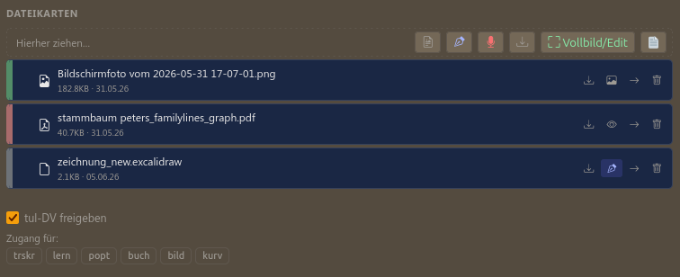

📎 Dateien & DV
Anhänge, Office-Bearbeitung, Freigabe an tul-Werkzeuge
Dateien anhängen
Im Karten-Detail per Drag & Drop eine Datei auf den Anhang-Bereich
ziehen, oder über den Upload-Button. Bilder werden automatisch als Vorschau angezeigt, PDFs im
Vollbild-Betrachter, Text/Markdown direkt editierbar im Anhang-Modal.
Office-Dokumente bearbeiten
docx/xlsx/pptx/odt-Anhänge lassen sich direkt im Browser öffnen und
bearbeiten (über OnlyOffice) — kein Download, keine lokale Installation nötig. Änderungen
werden beim Schließen automatisch als neue Version des Anhangs gespeichert.
Karte für ein tul-Werkzeug freigeben (DV)
Im Karten-Detail: Schalter „Für DV freigeben" aktivieren,
dann per Auswahl-Pillen das Ziel-Werkzeug wählen (z.B. „popt" für PDF-Optimierung). Danach
erscheint ein Link „→ popt öffnen".

Im Ziel-Werkzeug öffnet sich die Karte automatisch als eigener Tab im
Datei-Modal (Symbol oben in der Kopfzeile jedes tul-Werkzeugs) — mit allen Dateien der Karte,
zur Auswahl per Häkchen. Die Verbindung lässt sich jederzeit über den ⊗-Button
im entsprechenden Tab wieder lösen, ohne die Karte selbst zu berühren.
Nur-Spalten-Mitglieder (siehe Kapitel „Zusammenarbeit") können keine Karten für DV freigeben —
das ist Owner-Mitgliedern vorbehalten.
Umgekehrte Richtung: tul-Ausgabe → mkan-Karte
In jedem tul-Werkzeug lässt sich eine fertige Ausgabedatei direkt per
„→ mkan"-Chip an eine verbundene Karte schicken — landet dort als eigene
Dateikarte, kein manueller Download nötig.